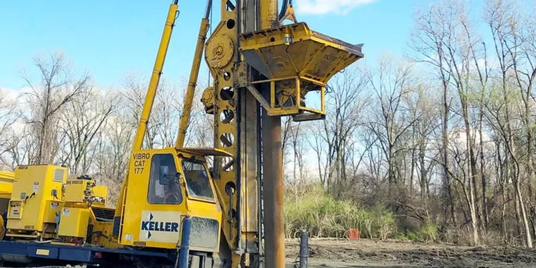

En Santiago, muchas veces vemos suelos granulares sueltos en terrenos aluviales del piedemonte o en depósitos del río Mapocho. La vibrocompactación es una técnica eficaz para densificar esos estratos sin necesidad de excavar ni reemplazar material. Consiste en introducir un vibrador profundo que reordena los granos, reduce huecos y mejora la resistencia a la licuefacción. Antes de aplicar el diseño, realizamos un estudio de mecánica de suelos para caracterizar la granulometría y definir la energía necesaria. Trabajamos con equipos de frecuencia variable y control de penetración continua. Cada proyecto en Santiago tiene condiciones únicas de humedad y confinamiento, por lo que ajustamos el patrón de puntos de vibración según los resultados de campo.

La vibrocompactación corrige suelos sueltos en Santiago reduciendo el riesgo de licuefacción y asentamientos diferenciales en proyectos de hasta 20 pisos.
Metodología y alcance
Los parámetros que controlamos son:
- Frecuencia de vibración: 30-50 Hz según el módulo del suelo.
- Amplitud: entre 4 y 10 mm para mover partículas gruesas.
- Espaciamiento de puntos: 1,5 a 2,5 m en malla triangular.
- Tiempo de vibración por punto: 30-90 segundos según respuesta.
Consideraciones locales
Un edificio de 15 pisos en la comuna de Las Condes enfrentó asentamientos diferenciales de hasta 8 cm durante su construcción. El estudio posterior reveló un estrato de arena limosa suelta entre los 6 y 10 m de profundidad, con baja resistencia por punta (q_c < 5 MPa). Sin vibrocompactación, el riesgo de licuefacción en un sismo de magnitud 7.5 era alto para ese nivel de carga. Al diseñar una malla de vibración con espaciamiento de 2 m y una frecuencia de 45 Hz, la densidad relativa pasó del 40% al 75% en dos semanas. La obra se retomó sin sobrecostos estructurales. En Santiago, ignorar la heterogeneidad del suelo en profundidad es el error más frecuente que vemos en proyectos de mediana altura.
¿Necesita una evaluación geotécnica?
Respuesta en menos de 24h.
WhatsApp directo: +56 9 7709 2993La forma más rápida de cotizar
Email: contacto@geotecnia1.biz
Normativa aplicable
NCh433.Of2012 (Diseño sísmico), NCh1508.Of2014 (Geotecnia), NCh2369.Of2003 (Estructuras industriales), NCh 165 (Densificación por vibración)
Servicios técnicos asociados
Estudio de Mecánica de Suelos para Vibrocompactación
Caracterizamos el perfil estratigráfico con ensayos SPT y CPT, determinando el contenido de finos, humedad natural y densidad relativa. El informe incluye la zonificación de áreas críticas y la energía de vibración recomendada por punto.
Supervisión y Control de Vibrocompactación en Obra
Monitoreamos en tiempo real la penetración del vibrador, la frecuencia y la amplitud mediante sensores digitales. Realizamos ensayos de cono de penetración post-tratamiento para verificar el aumento de resistencia y la uniformidad de la densificación.
Parámetros típicos
Preguntas frecuentes
¿En qué tipo de suelos de Santiago es más efectiva la vibrocompactación?
Funciona mejor en arenas y gravas limpias con menos de 15% de finos no plásticos. En la zona oriente de Santiago, los depósitos aluviales del Mapocho y los conos de deyección del piedemonte suelen cumplir esta condición. En suelos con arcillas o limos plásticos se requiere un tratamiento previo como precarga o sustitución.
¿Cuánto tiempo tarda el diseño de vibrocompactación para un proyecto en Santiago?
El diseño completo toma entre 2 y 4 semanas, dependiendo de la cantidad de puntos de exploración. Incluye la campaña de campo, ensayos de laboratorio, modelación numérica con el patrón de vibración y la definición de espaciamientos. Para proyectos urgentes podemos comprimir el plazo a 10 días hábiles.
¿Qué normativas chilenas aplican al diseño de vibrocompactación?
Se rige principalmente por la NCh1508.Of2014 para geotecnia y la NCh433.Of2012 para diseño sísmico. Para proyectos industriales se suma la NCh2369.Of2003. Además, seguimos la NCh 165 como referencia internacional para el ensayo de densificación por vibración.
¿Cuál es el costo referencial de un diseño de vibrocompactación en Santiago?
El rango referencial está entre $694.000 y $2.353.000, dependiendo del número de puntos de vibración, la profundidad del tratamiento y la complejidad del perfil de suelo. Incluye la campaña de campo, los ensayos de laboratorio y el informe técnico con planos de malla.